import h5py
import numpy as np
from sklearn.model_selection import train_test_split
from tensorflow.keras.optimizers import RMSprop,Adam
from tensorflow.keras.callbacks import ModelCheckpoint,EarlyStopping,ReduceLROnPlateau,CSVLogger
from tensorflow.keras.models import load_model
import matplotlib.pyplot as plt
import time,glob
from model import all_model
from utils import *利用多光谱遥感数据进行地物分类
本课程目的是利用神经网络开展多光谱地物分类，学习从整幅卫星影像制作样本数据集，训练多分类神经网络，并实现对整景卫星数据的预测。 运行该代码提前需要安装以下几个必要的库：
- numpy
- tensorflow = 2.5
- h5py = 3.1
- Pillow = 8.4
1. 加载并查看数据
## 加载数据集，数据集维度为3840×3840×4，最后一个波段是真值标签，标签一共有六类，“”
hdf5_path = "./data/kaggle_14_3b_5c.hdf5"
fd = h5py.File(hdf5_path, 'r')
fd.keys()
images=fd['image']
labels=fd['label']
n_label=len(np.unique(labels)) #{0:'buiding',1:'Road', 2:'Tree',3: 'Crops',4:'Water'}
## 该影像是反射率数据（通常数值在0-1之间），为了节省存储空间常将数值放大10000倍，保存为无符号整型数据
print(np.max(images),np.min(images),np.max(labels),np.min(labels))
images=np.array(images)
labels=np.array(labels)
print(images.shape,labels.shape)9995 213 4 0
(14, 3840, 3840, 3) (14, 3840, 3840)## 将整幅影像及标签数据打印出来,为了提升原始影像的显示效果，对原有数据进行拉伸处理
def stretch_n(band, lower_percent=5, higher_percent=95): #5和95表示分位数
band=np.array(band,dtype=np.float32)
c = np.percentile(band, lower_percent)*1.0
d = np.percentile(band, higher_percent)*1.0
band[band<c] = c
band[band>d] = d
out = (band - c) / (d - c)
return out.astype(np.float32)
def adjust_contrast(data,n_band=3): #通过循环对各个波段进行拉伸
data=np.array(data,dtype=np.float32)
for img in data:
for k in range(n_band):
img[:,:,k] = stretch_n(img[:,:,k])
return data
newimg=adjust_contrast(images.copy()) #该操作讲改变原始数据，因此用.copy，不对原始数据进行更改
print(np.max(images),np.max(newimg))
show_5_images(images/10000,labels)#plot函数要求数据为0-1之间的浮点型或0-255的8位整型数据
show_5_images(newimg,labels)
9995 1.0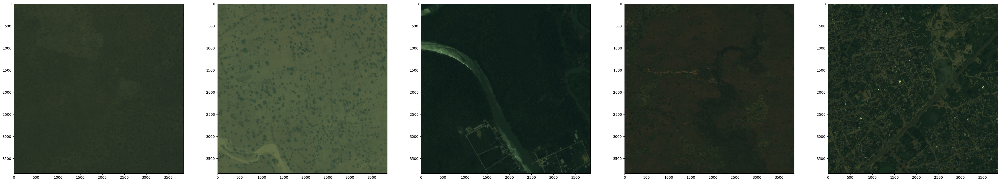
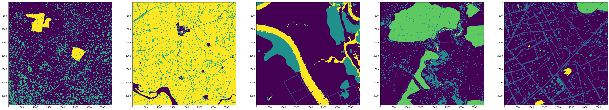

2. 数据切片
## 定义随机裁剪和顺序裁剪两种方式，顺序裁剪是按照固定步长沿行列循环裁剪，切片数是有限的，随机裁剪是以随机点为起始点裁剪，切片数可以是无限的且可自定义，后者的好处是可以通过增加算法约束label中某一类的数量来实现精准的样本获取。
def random_crop(image,crop_sz):
img_sz=image.shape[:2]
random_x = np.random.randint(0,img_sz[0]-crop_sz+1) ##生成随机点
random_y = np.random.randint(0,img_sz[1]-crop_sz+1)
s_img = image[random_x:random_x+crop_sz,random_y:random_y+crop_sz,:] ##以随机点为起始点生成样本框，进行切片
return s_img
def data_crop_random(img_arr,crop_sz,n_patch):
c = img_arr.shape[-1]
data = np.zeros([n_patch, crop_sz, crop_sz, c])
for j in np.arange(n_patch):
image = random_crop(img_arr,crop_sz)
data[ j,:,:,:] = image
return data
def sequential_crop(imagearray,crop_sz,step=256):
data = []
x=0
row_num = ((imagearray.shape)[0] - step) // step ##最多能裁剪几行 几列
col_num=((imagearray.shape)[1] - step) // step
x_start=0
y_start=0
for h in range(row_num):
for w in range(col_num):
crop_img = imagearray[crop_sz*h+y_start:crop_sz*(h+1)+y_start, crop_sz*w+x_start:crop_sz*(w+1)+x_start,:] ##行列循环，滑动窗口移动
data.append(crop_img)
x=x+1
data=np.array(data)
return data
def data_crop(imagearray,crop_sz,stride,random=None,n_patch=250): #设置random选项，用来切换是否采用随机裁切
data = []
for i in range(imagearray.shape[0]):
if random:
image=data_crop_random(imagearray[i,:,:,:],crop_sz,n_patch)
else:
image =sequential_crop(imagearray[i,:,:,:],crop_sz,stride)
if i == 0:
data = image ##注意当i=0的时候需要将image赋给data，否则data依然是空，不可以进行concatnate
else:
data = np.concatenate((data, image), axis = 0)
print("patch processing....:"+str(i))
data=np.array(data,dtype=np.float32)
print("final processed:"+str(i)+"...No.:"+str(data.shape[0]))
return data## 合并images和labels方便切片
data_all = np.concatenate((newimg, np.expand_dims(labels,axis=-1)), axis = -1)
stride=256
cropsize=256
all_patches=data_crop(data_all,cropsize,stride,random=False)##保留2景数据做测试
print(data_all.shape,all_patches.shape)
i=0patch processing....:0
patch processing....:1
patch processing....:2
patch processing....:3
patch processing....:4
patch processing....:5
patch processing....:6
patch processing....:7
patch processing....:8
patch processing....:9
patch processing....:10
patch processing....:11
patch processing....:12
patch processing....:13
final processed:13...No.:2744
(14, 3840, 3840, 4) (2744, 256, 256, 4)##调用utils中的plot_func查看数据与label是否对应,反复运行这个cell进行数据浏览i表示每次浏览跨越数据的个数
plot_func(all_patches[i:i+20,:,:,:3],all_patches[i:i+20:,:,:,-1])
i+=500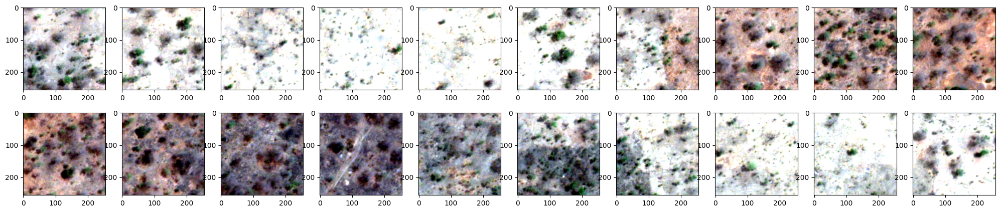
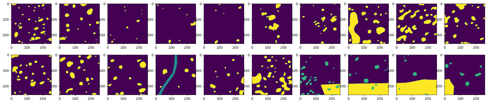
all_patches=suffle_data(all_patches) #对数据进行打乱处理(2744, 256, 256, 4)##可以选择将数据保存为h5文件，方便后续使用
hdf5_path = './data/patches_rgb_4b_5c.hdf5'
f = h5py.File(hdf5_path, mode='w')
f['image'] = all_patches[:,:,:,0:-1]
f['label'] = all_patches[:,:,:,-1]
f.close()3. 模型训练
# hdf5_path = "./data/patches_rgb_4b_6c.hdf5"
# fd = h5py.File(hdf5_path, 'r')
# fd.keys()
# images=np.array(fd['image'])
# labels=np.array(fd['label'])#3:tree,4:road,5:crop## 对数据进行归一化处理，并将label转成one-hot标签形式
# n_label=5
def post_normalize_image(images,labels,n_label=n_label):
msk = label_hot(labels,n_label)
img = images
return img,msk
# img,msk=post_normalize_image(images,labels,n_label)
img,msk=post_normalize_image(all_patches[:,:,:,0:-1],all_patches[:,:,:,-1],n_label)
## 将数据集按照7:3进行划分
xtrain,xtest,ytrain,ytest=train_test_split(img,msk,test_size=0.2,random_state=42)
del img,msk #如果数据较大可以在此删除降低内存
print(xtrain.shape,xtest.shape,ytrain.shape,ytest.shape)
i=0(2195, 256, 256, 3) (549, 256, 256, 3) (2195, 256, 256, 5) (549, 256, 256, 5)plot_func(xtrain[i:i+20,:,:,:3],np.argmax(ytrain,axis=-1)[i:i+20:,:,:])
i+=500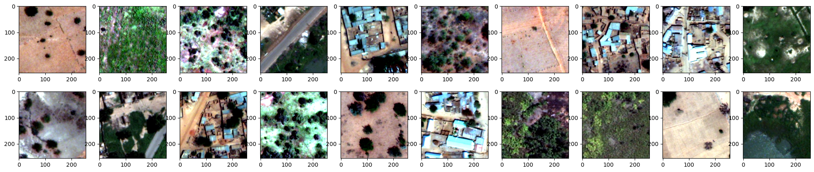
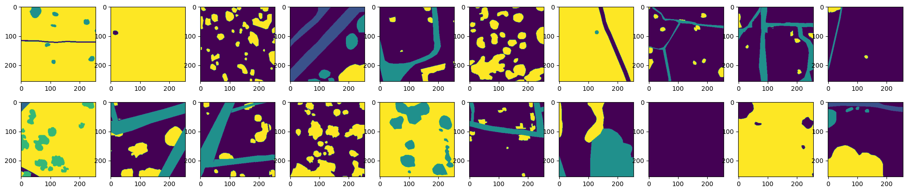
## 设定必要的参数
loss='categorical_crossentropy'
optimizer=Adam()
loss_weights=''
metrics=['accuracy']
batch_size=20
epoch= 50
input_height=xtrain.shape[1]
input_width=xtrain.shape[2]
nchannel=xtrain.shape[-1]
num_train=xtrain.shape[0]
num_val=xtest.shape[0]
ATM=all_model(loss,loss_weights,optimizer,metrics,input_height,input_width,n_label,nchannel) #向all_model传参返回模型
modelname='unet'## 加载UNET模型
model=ATM.UNET()#deeplabv3p,UNET,dlinknet,convattunet
# model.summary()## 开始训练
begin_time = time.time()
out_dir = "./checkpoint/"+modelname+'/'
if not os.path.exists(out_dir):
os.makedirs(out_dir)
## 设置model-checkpoint用来存储模型参数文件
model_checkpoint = ModelCheckpoint(filepath=out_dir+"-{epoch:02d}e-val_loss{val_loss:2f}.hdf5",monitor="val_loss",save_best_only=True,mode='auto')
## 设置csvlogger用来记录训练记录
csvlogger =CSVLogger(filename=out_dir+modelname+'-'+str(epoch)+'-log.csv', separator=',', append=False)
## model_checkpoint和csvlogger要想发挥作用必须放入callback中
result=model.fit(xtrain, ytrain, batch_size=batch_size, epochs=epoch, verbose=1, shuffle=True,validation_data=(xtest, ytest),callbacks=[model_checkpoint,csvlogger])
end_time = time.time()
print('time lapsing {0} s \n'.format(end_time - begin_time))Epoch 1/50
110/110 [==============================] - 42s 275ms/step - loss: 1.1495 - accuracy: 0.6211 - val_loss: 0.8305 - val_accuracy: 0.7096
Epoch 2/50
110/110 [==============================] - 22s 198ms/step - loss: 0.8297 - accuracy: 0.7023 - val_loss: 0.8479 - val_accuracy: 0.7174
Epoch 3/50
110/110 [==============================] - 23s 213ms/step - loss: 0.7564 - accuracy: 0.7295 - val_loss: 0.7701 - val_accuracy: 0.7465
Epoch 4/50
110/110 [==============================] - 23s 209ms/step - loss: 0.7241 - accuracy: 0.7353 - val_loss: 0.7346 - val_accuracy: 0.7350
Epoch 5/50
110/110 [==============================] - 23s 209ms/step - loss: 0.6612 - accuracy: 0.7560 - val_loss: 0.6612 - val_accuracy: 0.7651
Epoch 6/50
110/110 [==============================] - 22s 199ms/step - loss: 0.6603 - accuracy: 0.7573 - val_loss: 0.6624 - val_accuracy: 0.7571
Epoch 7/50
110/110 [==============================] - 23s 211ms/step - loss: 0.6069 - accuracy: 0.7803 - val_loss: 0.6109 - val_accuracy: 0.7743
Epoch 8/50
110/110 [==============================] - 23s 209ms/step - loss: 0.5959 - accuracy: 0.7837 - val_loss: 0.5707 - val_accuracy: 0.7895
Epoch 9/50
110/110 [==============================] - 23s 211ms/step - loss: 0.5670 - accuracy: 0.7965 - val_loss: 0.5354 - val_accuracy: 0.8031
Epoch 10/50
110/110 [==============================] - 22s 196ms/step - loss: 0.5354 - accuracy: 0.8077 - val_loss: 0.5420 - val_accuracy: 0.8020
Epoch 11/50
110/110 [==============================] - 22s 197ms/step - loss: 0.5269 - accuracy: 0.8084 - val_loss: 0.5449 - val_accuracy: 0.8104
Epoch 12/50
110/110 [==============================] - 23s 208ms/step - loss: 0.5232 - accuracy: 0.8107 - val_loss: 0.5206 - val_accuracy: 0.8109
Epoch 13/50
110/110 [==============================] - 23s 210ms/step - loss: 0.4868 - accuracy: 0.8268 - val_loss: 0.4856 - val_accuracy: 0.8252
Epoch 14/50
110/110 [==============================] - 22s 198ms/step - loss: 0.4827 - accuracy: 0.8273 - val_loss: 0.6254 - val_accuracy: 0.7814
Epoch 15/50
110/110 [==============================] - 22s 198ms/step - loss: 0.4961 - accuracy: 0.8224 - val_loss: 0.4901 - val_accuracy: 0.8262
Epoch 16/50
110/110 [==============================] - 23s 209ms/step - loss: 0.4700 - accuracy: 0.8329 - val_loss: 0.4735 - val_accuracy: 0.8256
Epoch 17/50
110/110 [==============================] - 22s 197ms/step - loss: 0.4603 - accuracy: 0.8339 - val_loss: 0.4862 - val_accuracy: 0.8220
Epoch 18/50
110/110 [==============================] - 22s 196ms/step - loss: 0.4476 - accuracy: 0.8389 - val_loss: 0.4996 - val_accuracy: 0.8220
Epoch 19/50
110/110 [==============================] - 23s 210ms/step - loss: 0.4218 - accuracy: 0.8471 - val_loss: 0.4579 - val_accuracy: 0.8304
Epoch 20/50
110/110 [==============================] - 22s 197ms/step - loss: 0.3968 - accuracy: 0.8580 - val_loss: 0.4725 - val_accuracy: 0.8203
Epoch 21/50
110/110 [==============================] - 22s 199ms/step - loss: 0.4013 - accuracy: 0.8550 - val_loss: 0.4729 - val_accuracy: 0.8256
Epoch 22/50
110/110 [==============================] - 23s 210ms/step - loss: 0.3659 - accuracy: 0.8679 - val_loss: 0.4542 - val_accuracy: 0.8362
Epoch 23/50
110/110 [==============================] - 22s 197ms/step - loss: 0.3730 - accuracy: 0.8648 - val_loss: 0.4884 - val_accuracy: 0.8149
Epoch 24/50
110/110 [==============================] - 23s 210ms/step - loss: 0.3559 - accuracy: 0.8716 - val_loss: 0.4249 - val_accuracy: 0.8431
Epoch 25/50
110/110 [==============================] - 22s 198ms/step - loss: 0.3223 - accuracy: 0.8838 - val_loss: 0.4684 - val_accuracy: 0.8340
Epoch 26/50
110/110 [==============================] - 22s 198ms/step - loss: 0.3408 - accuracy: 0.8776 - val_loss: 0.4931 - val_accuracy: 0.8341
Epoch 27/50
110/110 [==============================] - 22s 197ms/step - loss: 0.2869 - accuracy: 0.8964 - val_loss: 0.4596 - val_accuracy: 0.8429
Epoch 28/50
110/110 [==============================] - 22s 197ms/step - loss: 0.2717 - accuracy: 0.9020 - val_loss: 0.4739 - val_accuracy: 0.8430
Epoch 29/50
110/110 [==============================] - 22s 199ms/step - loss: 0.2566 - accuracy: 0.9070 - val_loss: 0.4645 - val_accuracy: 0.8507
Epoch 30/50
110/110 [==============================] - 22s 199ms/step - loss: 0.2469 - accuracy: 0.9102 - val_loss: 0.5344 - val_accuracy: 0.8413
Epoch 31/50
110/110 [==============================] - 22s 198ms/step - loss: 0.2762 - accuracy: 0.9023 - val_loss: 0.5081 - val_accuracy: 0.8386
Epoch 32/50
110/110 [==============================] - 22s 198ms/step - loss: 0.2831 - accuracy: 0.8983 - val_loss: 0.4640 - val_accuracy: 0.8485
Epoch 33/50
110/110 [==============================] - 22s 198ms/step - loss: 0.2424 - accuracy: 0.9125 - val_loss: 0.4504 - val_accuracy: 0.8548
Epoch 34/50
110/110 [==============================] - 22s 197ms/step - loss: 0.2218 - accuracy: 0.9193 - val_loss: 0.4752 - val_accuracy: 0.8492
Epoch 35/50
110/110 [==============================] - 22s 198ms/step - loss: 0.2124 - accuracy: 0.9227 - val_loss: 0.4808 - val_accuracy: 0.8529
Epoch 36/50
110/110 [==============================] - 22s 198ms/step - loss: 0.2016 - accuracy: 0.9262 - val_loss: 0.5387 - val_accuracy: 0.8507
Epoch 37/50
110/110 [==============================] - 22s 196ms/step - loss: 0.1973 - accuracy: 0.9278 - val_loss: 0.5704 - val_accuracy: 0.8502
Epoch 38/50
110/110 [==============================] - 22s 197ms/step - loss: 0.1797 - accuracy: 0.9334 - val_loss: 0.5250 - val_accuracy: 0.8552
Epoch 39/50
110/110 [==============================] - 22s 198ms/step - loss: 0.1729 - accuracy: 0.9356 - val_loss: 0.5235 - val_accuracy: 0.8561
Epoch 40/50
110/110 [==============================] - 22s 197ms/step - loss: 0.1718 - accuracy: 0.9359 - val_loss: 0.5590 - val_accuracy: 0.8421
Epoch 41/50
110/110 [==============================] - 22s 197ms/step - loss: 0.1823 - accuracy: 0.9320 - val_loss: 0.5435 - val_accuracy: 0.8470
Epoch 42/50
110/110 [==============================] - 22s 198ms/step - loss: 0.1711 - accuracy: 0.9358 - val_loss: 0.5568 - val_accuracy: 0.8570
Epoch 43/50
110/110 [==============================] - 22s 197ms/step - loss: 0.1513 - accuracy: 0.9426 - val_loss: 0.6066 - val_accuracy: 0.8564
Epoch 44/50
110/110 [==============================] - 22s 198ms/step - loss: 0.1386 - accuracy: 0.9466 - val_loss: 0.5596 - val_accuracy: 0.8534
Epoch 45/50
110/110 [==============================] - 22s 197ms/step - loss: 0.1423 - accuracy: 0.9451 - val_loss: 0.6868 - val_accuracy: 0.8247
Epoch 46/50
110/110 [==============================] - 22s 196ms/step - loss: 0.2242 - accuracy: 0.9180 - val_loss: 0.5130 - val_accuracy: 0.8211
Epoch 47/50
110/110 [==============================] - 22s 197ms/step - loss: 0.2567 - accuracy: 0.9064 - val_loss: 0.4996 - val_accuracy: 0.8435
Epoch 48/50
110/110 [==============================] - 22s 198ms/step - loss: 0.1763 - accuracy: 0.9341 - val_loss: 0.5540 - val_accuracy: 0.8556
Epoch 49/50
110/110 [==============================] - 22s 200ms/step - loss: 0.1357 - accuracy: 0.9472 - val_loss: 0.5536 - val_accuracy: 0.8574
Epoch 50/50
110/110 [==============================] - 22s 198ms/step - loss: 0.1193 - accuracy: 0.9528 - val_loss: 0.5919 - val_accuracy: 0.8576
time lapsing 1127.027404308319 s
## 打印训练曲线，确认训练效果，精度不够，loss不收敛，模型学习能力不足且容易过拟合
def plot_fig(H,outdir):
N=len(H.history['loss'])
plt.style.use("ggplot")
plt.figure(figsize=(10,6))
plt.plot(np.arange(0, N), H.history["loss"], label="train_loss")
plt.plot(np.arange(0, N), H.history["val_loss"], label="val_loss")
plt.plot(np.arange(0, N), H.history["accuracy"], label="train_acc")
plt.plot(np.arange(0, N), H.history["val_accuracy"], label="val_acc")
plt.ylim(0,1)
plt.title("Training Loss and Accuracy")
plt.xlabel("Epoch #")
plt.ylabel("Loss/Accuracy")
plt.legend(loc="lower left")
plt.savefig(outdir)
plot_fig(result,modelname+"_Loss_Acc_epoch.png")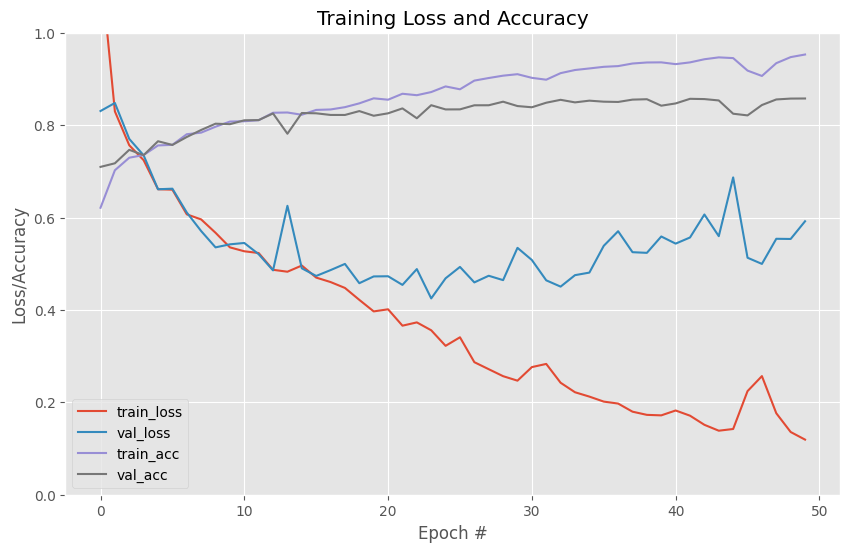
4. 评价测试
## 训练过程只保留最有性能参数文件，因此从训练记录里选择最后一个即可
h5=glob.glob("./checkpoint/"+modelname+"/*.hdf5")
model_list=np.sort(h5)
model=load_model(model_list[-1])
# model=load_model(model_list[-1],custom_objects={'interpolation':interpolation})#keras导入模型需要判断是会否有自定义函数或层，有的话需要在custom_objects中定义，并编译
print(model_list[-1])./checkpoint/unet\-24e-val_loss0.424916.hdf5## 首先对切片数据进行预测，查看效果
i=100
pred=model.predict(xtest,batch_size=64)
pred=np.argmax(pred,axis=-1)
gt=np.argmax(ytest,axis=-1)9/9 [==============================] - 9s 530ms/step##逐批次查看预测效果
val_plot_func(xtest[i:i+20],gt[i:i+20],pred[i:i+20])
i+=100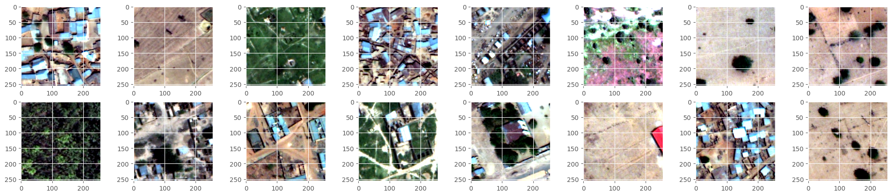
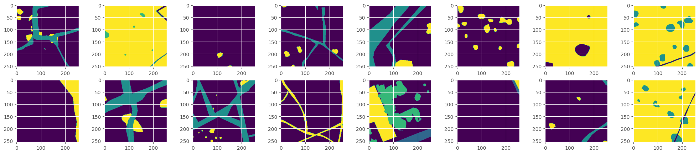
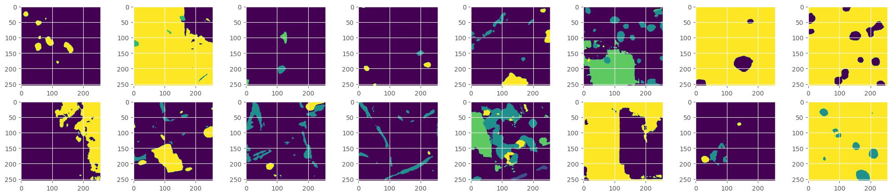
## 用测试集评价模型精度
df = call_matric(pred,gt, [0,1,2,3,4, 'all'])
print(df) precision recall F1-score iou oa miou
0 0.850384 0.895335 0.872280 0.773491 0.843104 0.519765
1 0.716035 0.285363 0.408089 0.256352 0.843104 0.519765
2 0.754666 0.684739 0.718004 0.560067 0.843104 0.519765
3 0.862850 0.904145 0.883015 0.790534 0.843104 0.519765
4 0.466484 0.291084 0.358479 0.218382 0.843104 0.519765
all 0.730084 0.612133 0.647973 0.519765 0.843104 0.5197654. 优化改进
4.1 数据优化
build_num = np.sum(labels ==0)
road_num = np.sum(labels == 1)
tree_num = np.sum(labels == 2)
crop_num = np.sum(labels == 3)
water_num = np.sum(labels == 4)
# 这两行代码解决 plt 中文显示的问题
plt.rcParams['font.sans-serif'] = ['SimHei']
plt.rcParams['axes.unicode_minus'] = False
plt.style.use("ggplot")
classes = ('0-Building', '1-Road', '2-Tree', '3-Crop', '4-Riveer')
numbers = [build_num,road_num, tree_num,crop_num, water_num]
print(numbers)
plt.barh(classes, numbers,color='lightblue')
plt.title('Number of pixels in each category')
# plt.savefig("Number-category.png", dpi = 600, bbox_inches="tight")
plt.show()[99016105, 11047398, 17424954, 76998497, 1951446]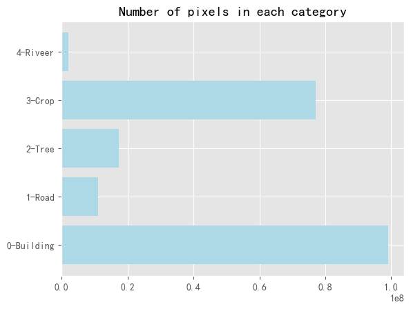
## 定义随机裁剪增加对于label中1和4样本的采集,"num_count(image[:,:,-1],1)"表示切片中数值为1的像元个数
def data_crop_random2(img_arr,crop_sz,n_patch):
data =[]
k=0
for j in np.arange(1000):
image = random_crop(img_arr,crop_sz)
if num_count(image[:,:,-1],1) +num_count(image[:,:,-1],4) >8000:
data.append(image)
k+=1
if k==n_patch:
break
if k == 0:
data = np.expand_dims(image,axis=0) ##注意如果k=0，即没有符合条件的数据将最后一个image赋给data，避免data为空
else:
data = np.array(data,dtype=np.float32)
print(data.shape)
return data.astype(np.float32)
def data_crop2(imagearray,crop_sz,stride,random=None,n_patch=250):
data = []
for i in range(imagearray.shape[0]):
if random:
image=data_crop_random2(imagearray[i,:,:,:],crop_sz,n_patch)
else:
image =sequential_crop(imagearray[i,:,:,:],crop_sz,stride)
if i == 0:
data = image ##注意当i=0的时候需要将image赋给data，否则data依然是空，不可以进行concatnate
else:
data = np.concatenate((data, image), axis = 0)
print("patch processing....:"+str(i))
data=np.array(data,dtype=np.float32)
print("final processed:"+str(i)+"...No.:"+str(data.shape[0]))
return data## 同样使用前面14幅影像进行切片，增加不平衡样本数据的采集
# data_all = np.concatenate((newimg, np.expand_dims(labels,axis=-1)), axis = -1)
# stride=256
# cropsize=256
all_patches2=data_crop2(data_all,cropsize,stride,random=True)
print(data_all.shape,all_patches2.shape)
i=0(1, 256, 256, 4)
patch processing....:0
(1, 256, 256, 4)
patch processing....:1
(207, 256, 256, 4)
patch processing....:2
(1, 256, 256, 4)
patch processing....:3
(250, 256, 256, 4)
patch processing....:4
(250, 256, 256, 4)
patch processing....:5
(63, 256, 256, 4)
patch processing....:6
(197, 256, 256, 4)
patch processing....:7
(151, 256, 256, 4)
patch processing....:8
(250, 256, 256, 4)
patch processing....:9
(68, 256, 256, 4)
patch processing....:10
(171, 256, 256, 4)
patch processing....:11
(24, 256, 256, 4)
patch processing....:12
(81, 256, 256, 4)
patch processing....:13
final processed:13...No.:1715
(14, 3840, 3840, 4) (1715, 256, 256, 4)all_patches2=suffle_data(all_patches2)# 对新的数据集进行随机打乱(1715, 256, 256, 4)# plot_func(all_patches2[i:i+20,:,:,:3],all_patches2[i:i+20:,:,:,-1])
# i+=500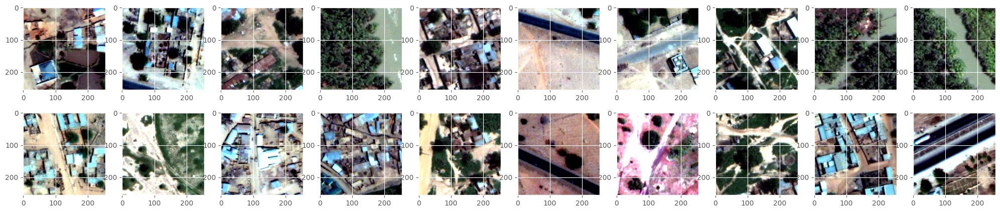
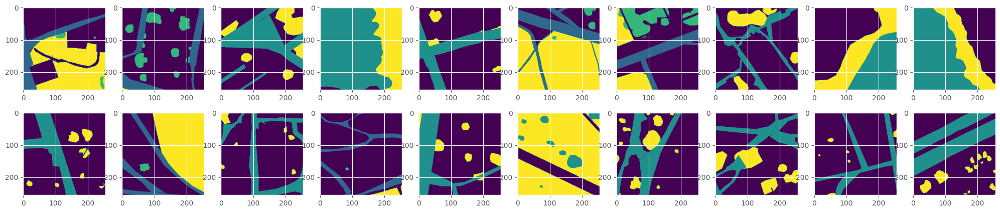
## 加载前面生成的切片数据
# hdf5_path = "./data/patches_rgb_4b_5c.hdf5"
# fd = h5py.File(hdf5_path, 'r')
# fd.keys()
# images2=np.array(fd['image'])
# labels2=np.array(fd['label'])## 对两次切片数据进行合并，得到新的数据集
newimages=np.concatenate((images2,all_patches2[:,:,:,0:-1]),axis=0)
newlabels=np.concatenate((labels2,all_patches2[:,:,:,-1]),axis=0)
print(newimages.shape,newlabels.shape)(4459, 256, 256, 3) (4459, 256, 256)##可以选择将数据保存为h5文件，方便后续使用
hdf5_path = './data/patches2_rgb_4b_5c.hdf5'
f = h5py.File(hdf5_path, mode='w')
f['image'] = newimages
f['label'] = newlabels
f.close()# hdf5_path = './data/patches2_rgb_4b_5c.hdf5'
# fd = h5py.File(hdf5_path, 'r')
# fd.keys()
# newimages=np.array(fd['image'])
# newlabels=np.array(fd['label'])#3:tree,4:road,5:crop## 对数据进行归一化处理，并将label转成one-hot标签形式
n_label=5
def post_normalize_image(images,labels,n_label=n_label):
msk = label_hot(labels,n_label)
img = images
return img,msk
img,msk=post_normalize_image(newimages,newlabels,n_label)
# 将数据集按照7:3进行划分
xtrain,xtest,ytrain,ytest=train_test_split(img,msk,test_size=0.2,random_state=42)
del img,msk #如果数据较大可以在此删除降低内存
print(xtrain.shape,xtest.shape,ytrain.shape,ytest.shape)
i=0(3567, 256, 256, 3) (892, 256, 256, 3) (3567, 256, 256, 5) (892, 256, 256, 5)plot_func(xtrain[i:i+20,:,:,:3],np.argmax(ytrain,axis=-1)[i:i+20:,:,:])
i+=500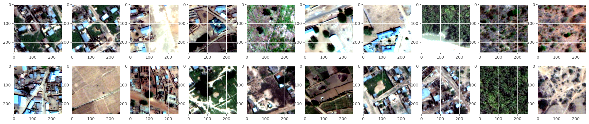
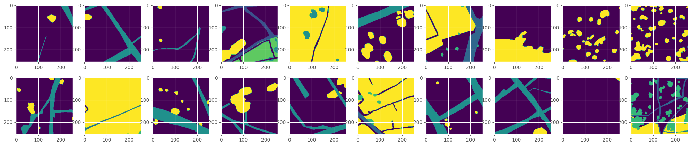
4.2 模型优化
## 计算真值标签中各个类别的占比，作为损失函数的权重，权重值越大模型识别错误代价越大一定程度缓解数据不平衡问题。
# from sklearn.utils.class_weight import compute_class_weight
# classes = np.unique(labels)
# class_weight = compute_class_weight(class_weight='balanced', classes=classes, y=labels.reshape(-1))
class_weight=np.array([0.35,4.48,2.07,0.68,28.55])
print(class_weight)[ 0.35 4.48 2.07 0.68 28.55]## 采用带有权重的交叉熵损失函数
from keras import backend as K
import tensorflow as tf
def weighted_categorical_crossentropy(weights):
"""
Usage:
weights = np.array([0.5,2,10]) # Class one at 0.5, class 2 twice the normal weights, class 3 10x.
loss = weighted_categorical_crossentropy(weights)
"""
weights = K.variable(weights)
def loss(y_true, y_pred):
# scale predictions so that the class probas of each sample sum to 1
y_pred /= K.sum(y_pred, axis=-1, keepdims=True)
# clip to prevent NaN's and Inf's
y_pred = K.clip(y_pred, K.epsilon(), 1 - K.epsilon())
# calc
loss = y_true * K.log(y_pred) * weights
loss = -K.sum(loss, -1)
return loss
return loss## 设定必要的参数
loss=weighted_categorical_crossentropy(class_weight)
optimizer=Adam()
loss_weights=''
metrics=['accuracy']
batch_size=10
epoch= 50
input_height=xtrain.shape[1]
input_width=xtrain.shape[2]
nchannel=xtrain.shape[-1]
num_train=xtrain.shape[0]
num_val=xtest.shape[0]
ATM=all_model(loss,loss_weights,optimizer,metrics,input_height,input_width,n_label,nchannel)
modelname='convattunet'## unet下采样操作较多导致细小线状地物信息丢失，新的网络减少下采样，且在decoder部分采用注意力机制提升浅层特征的权重
model=ATM.convattunet()#deeplabv3p,UNET,dlinknet,convattunet
# model.summary()384## 开始训练
begin_time = time.time()
out_dir = "./checkpoint/"+modelname+'/'
if not os.path.exists(out_dir):
os.makedirs(out_dir)
model_checkpoint = ModelCheckpoint(filepath=out_dir+"-{epoch:02d}e-val_loss{val_loss:2f}.hdf5",monitor="val_loss",save_best_only=True,mode='auto')
csvlogger =CSVLogger(filename=out_dir+modelname+'-'+str(epoch)+'-log.csv', separator=',', append=False)
result=model.fit(xtrain, ytrain, batch_size=batch_size, epochs=epoch, verbose=1, shuffle=True,validation_data=(xtest, ytest),callbacks=[model_checkpoint,csvlogger])
end_time = time.time()
print('time lapsing {0} s \n'.format(end_time - begin_time))Epoch 1/50
357/357 [==============================] - 132s 344ms/step - loss: 1.7302 - accuracy: 0.3324 - val_loss: 2.7731 - val_accuracy: 0.0355
Epoch 2/50
357/357 [==============================] - 117s 328ms/step - loss: 1.1811 - accuracy: 0.4554 - val_loss: 1.1779 - val_accuracy: 0.4066
Epoch 3/50
357/357 [==============================] - 117s 329ms/step - loss: 1.3168 - accuracy: 0.3951 - val_loss: 1.1310 - val_accuracy: 0.5230
Epoch 4/50
357/357 [==============================] - 115s 323ms/step - loss: 1.2823 - accuracy: 0.4182 - val_loss: 1.2304 - val_accuracy: 0.4714
Epoch 5/50
357/357 [==============================] - 115s 323ms/step - loss: 1.0932 - accuracy: 0.4740 - val_loss: 2.0796 - val_accuracy: 0.4236
Epoch 6/50
357/357 [==============================] - 116s 324ms/step - loss: 1.0692 - accuracy: 0.4806 - val_loss: 1.8193 - val_accuracy: 0.2795
Epoch 7/50
357/357 [==============================] - 117s 328ms/step - loss: 0.9390 - accuracy: 0.5248 - val_loss: 0.8420 - val_accuracy: 0.5531
Epoch 8/50
357/357 [==============================] - 116s 324ms/step - loss: 0.9168 - accuracy: 0.5349 - val_loss: 1.3639 - val_accuracy: 0.4214
Epoch 9/50
357/357 [==============================] - 115s 323ms/step - loss: 0.7919 - accuracy: 0.5759 - val_loss: 0.8654 - val_accuracy: 0.5469
Epoch 10/50
357/357 [==============================] - 116s 324ms/step - loss: 0.7120 - accuracy: 0.6098 - val_loss: 0.9407 - val_accuracy: 0.6363
Epoch 11/50
357/357 [==============================] - 115s 323ms/step - loss: 0.6665 - accuracy: 0.6290 - val_loss: 0.9928 - val_accuracy: 0.5825
Epoch 12/50
357/357 [==============================] - 117s 329ms/step - loss: 0.6473 - accuracy: 0.6359 - val_loss: 0.7060 - val_accuracy: 0.6126
Epoch 13/50
357/357 [==============================] - 116s 324ms/step - loss: 0.7309 - accuracy: 0.6215 - val_loss: 1.2073 - val_accuracy: 0.6001
Epoch 14/50
357/357 [==============================] - 115s 324ms/step - loss: 0.7831 - accuracy: 0.5896 - val_loss: 1.0000 - val_accuracy: 0.4280
Epoch 15/50
357/357 [==============================] - 115s 324ms/step - loss: 0.6402 - accuracy: 0.6407 - val_loss: 0.8063 - val_accuracy: 0.6192
Epoch 16/50
357/357 [==============================] - 117s 328ms/step - loss: 0.5884 - accuracy: 0.6662 - val_loss: 0.6009 - val_accuracy: 0.7153
Epoch 17/50
357/357 [==============================] - 116s 324ms/step - loss: 0.5722 - accuracy: 0.6790 - val_loss: 0.6031 - val_accuracy: 0.6628
Epoch 18/50
357/357 [==============================] - 117s 328ms/step - loss: 0.5473 - accuracy: 0.6883 - val_loss: 0.5610 - val_accuracy: 0.6622
Epoch 19/50
357/357 [==============================] - 115s 324ms/step - loss: 0.6260 - accuracy: 0.6581 - val_loss: 0.6122 - val_accuracy: 0.6706
Epoch 20/50
357/357 [==============================] - 115s 323ms/step - loss: 0.5256 - accuracy: 0.6956 - val_loss: 0.5667 - val_accuracy: 0.6594
Epoch 21/50
357/357 [==============================] - 117s 327ms/step - loss: 0.4587 - accuracy: 0.7269 - val_loss: 0.4607 - val_accuracy: 0.6873
Epoch 22/50
357/357 [==============================] - 115s 323ms/step - loss: 0.4570 - accuracy: 0.7349 - val_loss: 5.9171 - val_accuracy: 0.2067
Epoch 23/50
357/357 [==============================] - 116s 324ms/step - loss: 0.7492 - accuracy: 0.6173 - val_loss: 0.5541 - val_accuracy: 0.6501
Epoch 24/50
357/357 [==============================] - 115s 323ms/step - loss: 0.5090 - accuracy: 0.7099 - val_loss: 0.4747 - val_accuracy: 0.6905
Epoch 25/50
357/357 [==============================] - 115s 323ms/step - loss: 0.4161 - accuracy: 0.7504 - val_loss: 0.4940 - val_accuracy: 0.7504
Epoch 26/50
357/357 [==============================] - 115s 323ms/step - loss: 0.4415 - accuracy: 0.7416 - val_loss: 0.6152 - val_accuracy: 0.7500
Epoch 27/50
357/357 [==============================] - 117s 328ms/step - loss: 0.4088 - accuracy: 0.7558 - val_loss: 0.4202 - val_accuracy: 0.7457
Epoch 28/50
357/357 [==============================] - 115s 323ms/step - loss: 0.3941 - accuracy: 0.7668 - val_loss: 0.4369 - val_accuracy: 0.7617
Epoch 29/50
357/357 [==============================] - 117s 328ms/step - loss: 0.3693 - accuracy: 0.7788 - val_loss: 0.3911 - val_accuracy: 0.7993
Epoch 30/50
357/357 [==============================] - 116s 324ms/step - loss: 0.3296 - accuracy: 0.7972 - val_loss: 0.4089 - val_accuracy: 0.8031
Epoch 31/50
357/357 [==============================] - 115s 323ms/step - loss: 0.6094 - accuracy: 0.6927 - val_loss: 0.5222 - val_accuracy: 0.7067
Epoch 32/50
357/357 [==============================] - 115s 323ms/step - loss: 0.6922 - accuracy: 0.6500 - val_loss: 0.4923 - val_accuracy: 0.7336
Epoch 33/50
357/357 [==============================] - 115s 323ms/step - loss: 0.3982 - accuracy: 0.7583 - val_loss: 0.4426 - val_accuracy: 0.7489
Epoch 34/50
357/357 [==============================] - 117s 328ms/step - loss: 0.3531 - accuracy: 0.7851 - val_loss: 0.3565 - val_accuracy: 0.7895
Epoch 35/50
357/357 [==============================] - 115s 323ms/step - loss: 0.3184 - accuracy: 0.8056 - val_loss: 0.3931 - val_accuracy: 0.7762
Epoch 36/50
357/357 [==============================] - 115s 323ms/step - loss: 0.3268 - accuracy: 0.8041 - val_loss: 0.7312 - val_accuracy: 0.7174
Epoch 37/50
357/357 [==============================] - 115s 323ms/step - loss: 0.5086 - accuracy: 0.7256 - val_loss: 0.4377 - val_accuracy: 0.7344
Epoch 38/50
357/357 [==============================] - 115s 323ms/step - loss: 0.4898 - accuracy: 0.7339 - val_loss: 0.4392 - val_accuracy: 0.7486
Epoch 39/50
357/357 [==============================] - 115s 323ms/step - loss: 0.3323 - accuracy: 0.7972 - val_loss: 0.4307 - val_accuracy: 0.7965
Epoch 40/50
357/357 [==============================] - 115s 323ms/step - loss: 0.3074 - accuracy: 0.8101 - val_loss: 0.3669 - val_accuracy: 0.7966
Epoch 41/50
357/357 [==============================] - 117s 327ms/step - loss: 0.2872 - accuracy: 0.8219 - val_loss: 0.3196 - val_accuracy: 0.8116
Epoch 42/50
357/357 [==============================] - 115s 323ms/step - loss: 0.2687 - accuracy: 0.8335 - val_loss: 0.3486 - val_accuracy: 0.7991
Epoch 43/50
357/357 [==============================] - 115s 323ms/step - loss: 0.2602 - accuracy: 0.8381 - val_loss: 0.3334 - val_accuracy: 0.8044
Epoch 44/50
357/357 [==============================] - 116s 324ms/step - loss: 0.2730 - accuracy: 0.8322 - val_loss: 0.3430 - val_accuracy: 0.8112
Epoch 45/50
357/357 [==============================] - 117s 327ms/step - loss: 0.2481 - accuracy: 0.8450 - val_loss: 0.3174 - val_accuracy: 0.8323
Epoch 46/50
357/357 [==============================] - 116s 324ms/step - loss: 0.2362 - accuracy: 0.8527 - val_loss: 0.3275 - val_accuracy: 0.8271
Epoch 47/50
357/357 [==============================] - 115s 323ms/step - loss: 0.2201 - accuracy: 0.8618 - val_loss: 0.3433 - val_accuracy: 0.8147
Epoch 48/50
357/357 [==============================] - 115s 324ms/step - loss: 0.2571 - accuracy: 0.8444 - val_loss: 0.3561 - val_accuracy: 0.8300
Epoch 49/50
357/357 [==============================] - 115s 323ms/step - loss: 0.2231 - accuracy: 0.8617 - val_loss: 0.4232 - val_accuracy: 0.8120
Epoch 50/50
357/357 [==============================] - 115s 323ms/step - loss: 0.2010 - accuracy: 0.8733 - val_loss: 0.3685 - val_accuracy: 0.8746
time lapsing 5814.08594250679 s
## 训练时长较短，模型为达到收敛因此最高精度不是很高，但训练曲线和验证曲线趋势十分吻合，且loss有明显的降低，表明模型性能有提升
plot_fig(result,modelname+"_Loss_Acc_epoch.png")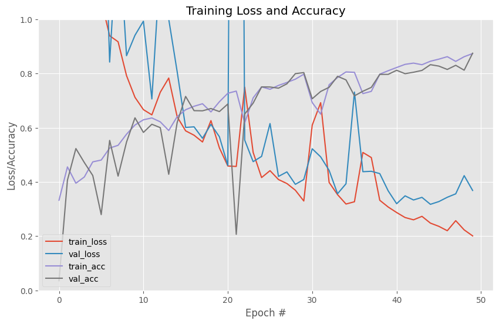
h5=glob.glob("./checkpoint/"+modelname+"/*.hdf5")
model_list=np.sort(h5)
# model=load_model(model_list[-1])
model=load_model(model_list[-1],custom_objects={'loss':weighted_categorical_crossentropy}) #loss作为自定义层需要指出
print(model_list[-1])./checkpoint/convattunet\-45e-val_loss0.317361.hdf5## 首先对切片数据进行预测，查看效果
i=100
pred=model.predict(xtest,batch_size=64)
pred=np.argmax(pred,axis=-1)
gt=np.argmax(ytest,axis=-1)14/14 [==============================] - 15s 816ms/stepval_plot_func(xtest[i:i+20],gt[i:i+20],pred[i:i+20])
i+=20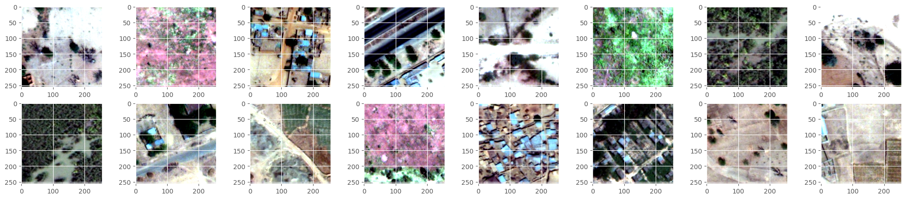
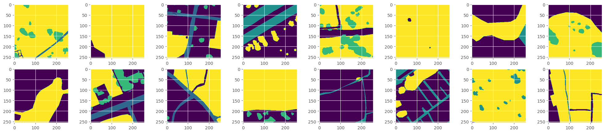
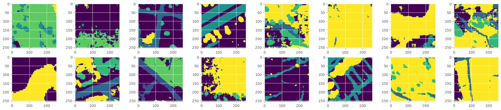
## 评估结果发现1类和4类地物较之前都有精度的提升，整体miou提升16%
df = call_matric(pred,gt, [0,1,2,3,4,'all'])
print(df) precision recall F1-score iou oa miou
0 0.939834 0.777367 0.850915 0.740515 0.832341 0.679057
1 0.544363 0.946242 0.691128 0.528033 0.832341 0.679057
2 0.645177 0.880091 0.744544 0.593047 0.832341 0.679057
3 0.923623 0.863848 0.892736 0.806254 0.832341 0.679057
4 0.730599 0.994085 0.842215 0.727437 0.832341 0.679057
all 0.756720 0.892327 0.804308 0.679057 0.832341 0.6790574.3 整景影像的预测
## 加载整景的影像进行测试
test_data = h5py.File('./data/kaggle_test1_3b_5c.hdf5', 'r')
testimg = np.array(test_data['image'])
testlabel=np.array(test_data['label'])
print(testimg.shape,testlabel.shape)(1, 3840, 3840, 3) (1, 3840, 3840)## 与训练数据采用相同的预处理方式
image=adjust_contrast(testimg)
np.max(image),np.max(testimg)(1.0, 9995)## 首先对影像做padding，保证其能够被crop_size整除，先沿着行列分别裁切样本，再统一进行预测，预测后数据按照原来的顺序再排列组合复原。需要注意的是这里采用的是膨胀预测的方法，喂给模型用来预测的切片大小是256，但放的时候只保留了中间的128×128，四周数据可靠度低，直接废弃
def center_predict(img,model,batch_size,n_label,strides=128,img_size=256):
corner_size=int(0.25*img_size)
h,w,c = img.shape
padding_h = (h//strides + 1) * strides+corner_size+corner_size
padding_w = (w//strides + 1) * strides+corner_size+corner_size
padding_img = np.zeros((padding_h,padding_w,c),dtype=np.float16)
padding_img[corner_size:corner_size+h,corner_size:corner_size+w,:] = img[:,:,:]
mask_whole = np.zeros((padding_h,padding_w,n_label),dtype=np.float16)
crop_batch=[]
for i in range(h//strides+1):
for j in range(w//strides+1):
crop_img = padding_img[i*strides:i*strides+img_size,j*strides:j*strides+img_size,:]
ch,cw,c = crop_img.shape
if ch != img_size or cw != img_size:
continue
crop_batch.append(crop_img)
crop_batch=np.array(crop_batch)
start_time=time.time()
pred=model.predict(crop_batch,batch_size=batch_size)
for i in range(h//strides+1):
for j in range(w//strides+1):
mask_whole[i*strides+corner_size:i*strides+img_size-corner_size,j*strides+corner_size:j*strides+img_size-corner_size] = pred[(i+1-1)*(w//strides+1)+(j+1)-1,corner_size:img_size-corner_size,corner_size:img_size-corner_size]
score = mask_whole[corner_size:corner_size+h,corner_size:corner_size+w]
end_time=time.time()
print('pred_time:',end_time-start_time)
return scoreh_pred = center_predict(image[0],model,32,n_label)
h_pred_mask=np.argmax(h_pred, axis = -1)
print(h_pred.shape,testlabel[0].shape)31/31 [==============================] - 11s 292ms/step
pred_time: 14.90808916091919
(3840, 3840, 5) (3840, 3840)fig=plt.figure(figsize=(20,20))
plt.subplot(1,2,1)
plt.imshow(testlabel[0,:,:])
plt.subplot(1,2,2)
plt.imshow(h_pred_mask)
plt.show()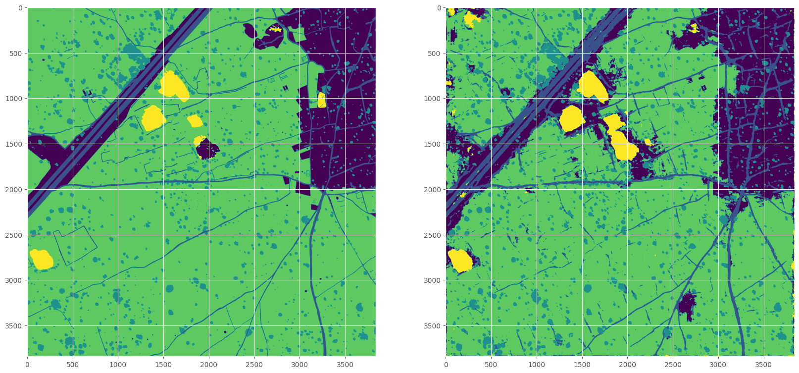